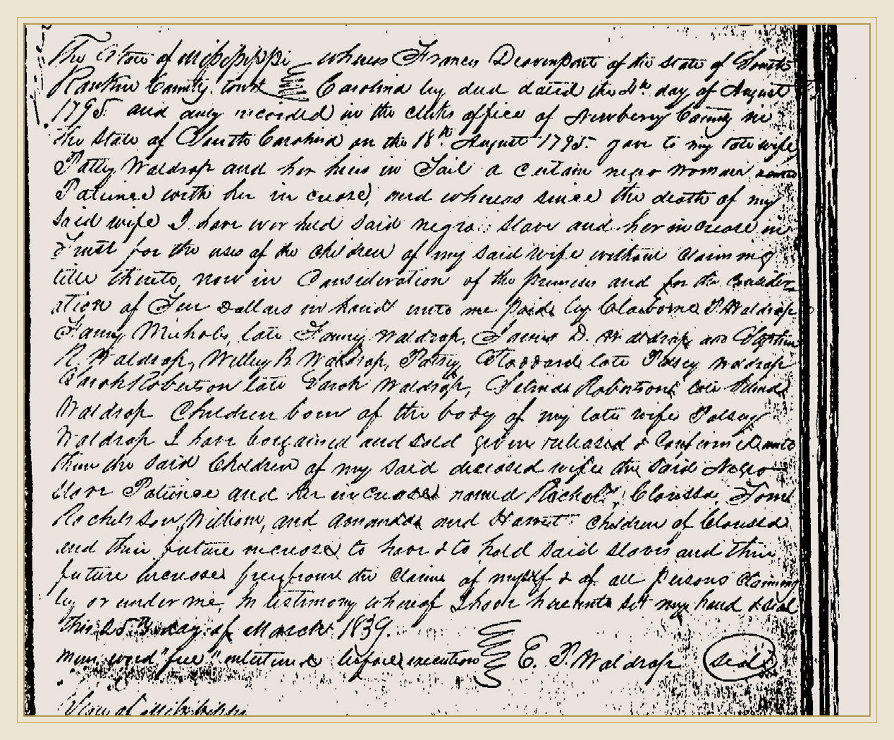

The story has become clearer — and more careful.
The archive once presented a single uninterrupted maternal chain around Patience with more certainty than the surviving documents allow. The newer research changes that. Patience is real, repeatedly documented, and traceable across a remarkable span of records. But not every person once placed before or after her has been proved by the same kind of evidence.
The March 22, 1793 Sims mortgage places a Patience in the same named enslaved community as Molley. The August 4, 1795 Newberry County deed places an enslaved girl named Patience in the Davenport–Waldrop property network. Later Mississippi instruments preserve a Patience in the Waldrop network and name descendants or younger people associated with her. Those records form the core of this page.
Follow the documents west.
Named in Sims mortgage network
Francis Davenport Sr. → Patty Waldrop
Patience, Rachel, Clara & Tom in Waldrop transfer
Family dispersal; Patience later with Stephen in Jackson Parish
The map matters because enslaved people often disappear from ordinary genealogical records when the white household around them moves. To follow Patience, we have to follow deeds, estates, kinship, land, creditors, and the Waldrop household network at the same time.
A name inside a mortgage.
In March 1793, James Sims Sr. used land and enslaved people as collateral in a mortgage to merchant Peter Braselman. Patience appears in the named enslaved community recorded in that instrument. Molley appears there too, alongside other named people.
This is the kind of document that makes African American genealogy before emancipation so difficult: the record exists because of an enslaver's debt. The people named in it had no control over the transaction, yet their names survived because the law treated them as property valuable enough to itemize.
“One Negro girl named Patience.”
Two years later, another Patience enters a much more specific property transaction. Francis Davenport Sr. conveyed an enslaved girl named Patience to Patty Waldrop. This deed is one of the central anchors of the reconstruction.
The transfer occurred amid a larger series of Davenport family property distributions. Francis Sr. was transferring land and enslaved people among children and relatives. Patience was therefore not an isolated transaction. Her transfer belonged to a broader redistribution of wealth inside the Davenport family.
Later legal language looks back to this 1795 conveyance and describes Patience together with her “increase” — a legal term referring to children born to an enslaved woman. That later wording exposes one of slavery's most brutal legal mechanisms: the claim did not end with a woman's body. It extended to children not yet born.

The 1795 deed that names Patience
What this document tells us: Francis Davenport Sr. transferred an enslaved girl named Patience to his daughter Patty Waldrop in Newberry County, South Carolina. This is the anchor that places Patience inside the Davenport–Waldrop household network.
Newberry County, South Carolina · Deed Book C · Aug. 4, 1795 · Image preserved in the Armstrong Family ArchiveDavenport → Waldrop.
To understand what happened to Patience, we have to understand why her name moves through white family records. The Davenport and Waldrop families were connected by kinship, marriage, land, and property transfers. Those relationships created the legal paper trail in which Patience appears.
Patty Waldrop is strongly identified in the compiled family reconstruction as Martha “Patsy” Davenport Waldrop, associated with Ezekiah/Hezekiah Parrish Waldrop. The archive treats that identification as strongly supported, while still distinguishing compiled genealogy from an original parentage record.

The 1839 family distribution record
What this document tells us: the later Waldrop property instrument preserves Patience inside a multigenerational family group and is the key record for reconstructing Rachel, Clarissa, Tom, William, Amanda, and Harriet around her. It also shows why a property deed can become a family record even though that was never its purpose.
Rankin County, Mississippi · Mar. 25, 1839 · Record image/plate preserved in the Armstrong Family ArchiveThe deed places Patience in the Davenport property-distribution network.
The woman to whom Patience was conveyed. Strongly identified with Martha “Patsy” Davenport Waldrop in the family reconstruction.
Later instruments place Patience and younger people in the Waldrop property and trust chain.
Receives Patience, Rachel, and Thomas in a later documented transfer.
The westward pressure was not accidental.
By the time Patience appears in Mississippi records, Mississippi was being transformed by cotton. Planters pushed into the interior, and enslaved labor was moved with them. The cotton economy tied land acquisition directly to the expansion of slavery. By 1830, enslaved people outnumbered white people in Mississippi.
This wider history does not tell us the exact wagon, road, or day on which Patience traveled. It tells us why the documentary world around her was moving west: land, cotton, family inheritance, and enslaved labor were moving together.
Patience appears again.
The original deed is now in the archive. Dated August 11, 1827 in Hinds County, Mississippi, it records Ezekiah P. Waldroup/Waldrop conveying property to his son Stephen R. Waldroup/Waldrop. The deed expressly names four enslaved people together: Patience, Rachel, Clara, and a boy called Tom or Thomas. This is a major continuity point because it places Patience by name inside the same Waldrop family network thirty-two years after Francis Davenport's 1795 conveyance to Patty Waldrop.
The deed values the four people separately and places them together in Stephen R. Waldrop's legal possession. In the wider researcher reconstruction, Clara/Clarissa belongs to Patience's family group; the exact spelling and relationship language should continue to be checked against the original deed and the related 1839 distribution instrument.
A family becomes visible inside a property instrument.
The 1839 Rankin County record is one of the most important documents in Patience's story. It looks backward to the earlier Patience conveyance and places a multigenerational Black family inside the Waldrop trust and estate chain.
The current reconstruction identifies Patience; Rachel; Clarissa; Tom, identified with Rachel; and William, Amanda, and Harriet, identified with Clarissa. This structure must continue to be checked against the original image whenever difficult wording or punctuation affects a relationship.
The instrument was not emancipation. Language releasing one person's claim did not make Patience's family free; it concerned legal claims and transfer of property interests. Reading that distinction correctly changes the entire meaning of the document.
The woman whose earlier transfer underlies the later property history.
Named in the Mississippi records; the 1839 reconstruction associates Tom with Rachel.
The 1839 reconstruction identifies William, Amanda, and Harriet with Clarissa.
Their names show that the legal consequences of Patience's enslavement reached into another generation.
Property law could fracture a family without moving a county line.
The 1839 transaction trail also places Rachel in a transfer involving Stephen R. Waldrop and Howell Prestridge. The original image remains important for the exact consideration and wording. What matters for the story now is that the younger generation did not simply remain an untouched household unit.
Every deed creates two histories at once: the history of the white families exchanging legal claims, and the history of the Black family forced to live with the consequences. For Patience, a deed could mean a child or grandchild was now controlled by someone else, even when the record reduced that rupture to a line of legal language.
At ninety, Patience is still with Stephen.
By 1870, slavery had ended. In Jackson Parish, Louisiana, researchers identified a Black woman recorded only as “P.”, age ninety, born in Virginia, living in the household of Stephen R. Waldrop — the same Stephen who had received Patience from his father in 1827.
The Armstrong Family Archive accepts the multi-researcher reconstruction that this elderly woman is Patience. The identification rests on the continuing Waldrop association, the chronology, the reported Virginia birthplace, the migration trail, and her presence with the same Stephen at the end of her life. The census itself supplies only the initial “P.”; the full identification is therefore a reconstructed identity supported by the surrounding record rather than a spelled-out census name.
If she was about ninety in 1870, Patience was born about 1780. That would make her roughly fifteen when Francis Davenport conveyed the “girl named Patience” to Patty Waldrop in 1795, about forty-seven when Ezekiah transferred her to Stephen in 1827, and about fifty-nine during the 1839 property division. The ages form a coherent life course.
No later record has yet been identified. For this archive, 1870 is the present closing point of Patience's individual road. We can continue looking for a death or burial record, but the larger research question now moves to the children and grandchildren who lived through the same enslaving-family network.
Freedom came in law. Hardship did not disappear.
The Emancipation Proclamation took effect January 1, 1863, but it was a wartime measure whose reach depended on Union military power. The Thirteenth Amendment, ratified in December 1865, abolished slavery nationwide. The Fourteenth Amendment followed in 1868, establishing birthright citizenship and equal protection; the Fifteenth Amendment was ratified in 1870, prohibiting denial of voting rights on account of race.
For formerly enslaved families, those constitutional changes were enormous — but freedom began without compensation for generations of stolen labor and, for most, without land or accumulated wealth. Across the postwar South, labor systems such as sharecropping and crop liens could create new forms of economic dependency.
The accepted reconstruction places Patience alive in 1870. Her life therefore crossed an extraordinary legal divide: from being recorded as property to living in a country in which slavery had finally been abolished. The census gives only the initial “P.”, so the archive is transparent that the full-name identification comes from the accumulated reconstruction rather than from the enumerator spelling out her name.
Patience's story does not need a false bridge to matter.
The later Texas family is documented through Rendy Blayn/Bland as a continuing research problem, Easter Bell Nichols as a confirmed later ancestor, and the Nichols–Armstrong–Ballard line that follows. What has not yet been established by a clean documentary bridge is that Rendy descends from Clarissa, or that Easter's maternal line can be carried backward directly into Patience's Mississippi family.
That distinction protects both stories. Patience's documented South Carolina–Mississippi history stands on its own evidence. Easter Bell Nichols's Texas history stands on its own evidence. If a future record joins them, the archive will show exactly how. Until then, proximity, migration, surnames, DNA clues, and family networks are evidence to investigate — not permission to erase the gap.
The backbone of the reconstruction.
| Date | Record | What it establishes | Status |
|---|---|---|---|
| 22 Mar 1793 | Sims mortgage / Deed Book B | Places a Patience and Molley in the named enslaved community recorded in the Sims transaction. | DOCUMENTED |
| 4 Aug 1795 | Francis Davenport Sr. → Patty Waldrop / Newberry Deed Book C | Conveys “one Negro girl named Patience” to Patty Waldrop. | DOCUMENTED |
| 11 Aug 1827 | Ezekiah P. Waldroup → Stephen R. Waldroup · Hinds County, Mississippi | Original deed reviewed: conveys property to Stephen and names Patience, Rachel, Clara, and a boy called Tom or Thomas together. | DOCUMENTED · ORIGINAL IMAGE REVIEWED |
| 25 Mar 1839 | Rankin County deed / trust chain | Recites the earlier Patience property history and names the multigenerational family group used in the current reconstruction. | DOCUMENTED / ORIGINAL WORDING TO VERIFY FOR RELATIONSHIPS |
| 1839 | Stephen R. Waldrop → Howell Prestridge trail | Shows Rachel moving through a separate property transaction; exact consideration still requires original-image confirmation. | DOCUMENTED LEAD |
| 1870 | Jackson Parish, Louisiana census · Stephen R. Waldrop household | Black woman “P.”, age 90, born Virginia, living with Stephen. Multiple researchers identify her as Patience; the archive accepts this as the closing point of her reconstructed life. | SUPPORTED IDENTIFICATION / ACCEPTED RECONSTRUCTION |
| Texas line | Rendy / Easter Bell Nichols records | Documents the later Texas family, but does not yet supply the missing Clarissa → Rendy bridge. | SEPARATE DOCUMENTED LINE / BRIDGE UNRESOLVED |
The deeds tried to describe property. We can read them as evidence of people.
Patience's surviving paper trail is full of the language of ownership: mortgage, gift, transfer, trust, claim, increase. That vocabulary tells us what the legal system believed she was. It does not tell us who she believed herself to be.
We do not know the sound of her voice. We do not know what she called her children at home, what she feared when another deed was signed, or what memories she carried from South Carolina into Mississippi. The archive will not invent those things.
What we can do is refuse to let the legal language have the final word. We can identify every person named with her. We can follow every transaction. We can reconstruct the geography. We can study the economy and laws that caused families like hers to be moved and divided. And we can leave the unresolved spaces visible so that the next document has somewhere honest to land.